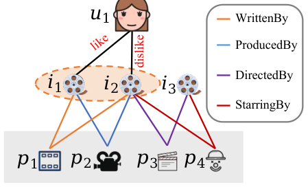
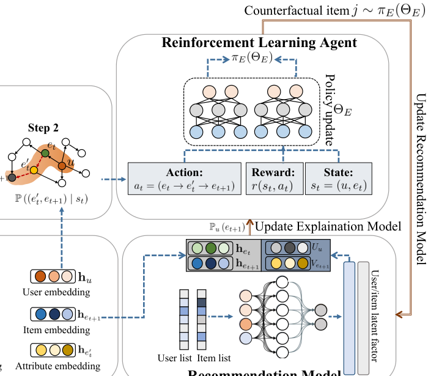

Reinforced Path Reasoning for Counterfactual Explainable Recommendation (基于强化路径推理的反事实可解释推荐)
- 会议/期刊: IEEE TKDE (arXiv 预印本 2022-07)
- 作者与机构: Xiangmeng Wang, Qian Li, Dianer Yu, Guandong Xu（悉尼科技大学 DSMI Lab / 科廷大学）
- 推荐链路定位: 精排 + 解释生成（解释策略与排序模型迭代共训）
- 研究方向: 图神经网络与知识图谱推荐 / 强化学习与动态探索推荐
- 论文原文: https://arxiv.org/abs/2207.06674v1
- 开源代码: https://github.com/Chrystalii/CERec
TL;DR (1分钟核心速览)
现有反事实解释要么基于"用户动作"（删点击边），要么基于"物品侧面"（改 aspect 分数），且需在巨大候选中做贪心搜索，解释既不直观也不是物品属性级（如品牌、流派）。本文提出 CERec：把反事实解释建模为协同知识图谱上的路径推理 MDP，用两步注意力路径采样器把动作空间从"任意高阶路径"压缩为"物品→属性→物品"三元路径，再用 REINFORCE 优化"合理性 + 相似性"反事实奖励；产出的反事实物品既生成属性差分解释，又作为高质量负样本做成对共训。在 Last-FM / Amazon-book / Yelp2018 上，Recall@20 相对最优基线提升 13.20%–16.70%，Yelp2018 Recall@80 提升 78.03%，解释一致性 F1 相对 CaDSI 提升约 1.8–2.0 倍。
Background & Motivation (背景与核心矛盾)
- 主流范式: 可解释推荐分模型内建（决策树、关联规则）与模型无关（post-hoc 归因）。反事实解释这一支再分为搜索式（对交互/特征做扰动后贪心搜索，Kaffes et al.、Xiong et al.）与优化式（删边后算 PageRank 的 PRINCE、改 aspect 分数的 CountER）。
- 前人局限: ①搜索式在组合爆炸的候选空间上开销不可承受；②优化式只覆盖 user-action 或 item-aspect 两类解释，物品属性（demographic attribute）级反事实仍空白；③既有方法用固定数量（如 top-10）重要属性构造解释，从不搜索"最小充分改变集"，因此解释冗长且不可证伪。
- 核心洞察 (Key Insight): 若 \(i_1\)（属性\(\{p_1,p_2\}\)）被喜欢而\(i_2\)（属性\(\{p_1,p_2,p_3,p_4\}\)）被讨厌，则把\(\{p_3,p_4\}\)当作解释比罗列全部属性更接近真实因果——"差集"而非"交集"才是解释；且该差集反过来可判定同属性的\(i_3\) 也应被过滤，从而解释即负样本。

- 本文切入点: 以协同知识图谱 (CKG) 为唯一载体，把"找最小属性差集"转化为"找最小差异的反事实物品"，再用 RL 策略在路径空间中高效搜索。
Method (核心方法设计)
1. 整体框架 (Overall Architecture)
CKG 由用户-物品交互与外部 KG 经对齐函数 \(\psi:\mathcal{I}\to\mathcal{E}\)融合而成。三个模块闭环：图学习模块（GraphSAGE + 逐层聚合）产出用户/物品/属性实体嵌入；推荐模型（CliMF，\(\hat{y}_{ui}=\mathbf{U}_u^{\top}\mathbf{V}_i\)）产出 top-\(K\)列表\(\mathcal{Q}_u\)；反事实解释模型在嵌入空间上用两步注意力采样"物品→属性→物品"路径作为动作，RL 智能体依据"合理性 + 相似性"奖励学习解释策略\(\pi_E\)；策略输出的反事实物品\(j\)一方面抽取\(j\)与\(i\) 的属性差集生成自然语言解释，另一方面作为成对负样本回灌推荐模型，形成迭代优化。
flowchart TD
A["CKG: 用户-物品-属性三元组"] --> B["GraphSAGE 图学习模块 + 逐层聚合"]
B --> C["CliMF 推荐模型打分 P_u(i)"]
C --> D["反事实路径采样器 CPS: 两步注意力采样 (i→a→j)"]
D --> E["RL 智能体: 反事实奖励 + REINFORCE"]
E --> F["反事实物品 j 与属性差集解释"]
F --> C
2. 关键设计拆解 (Key Designs)
- 两步注意力路径采样器 CPS（把指数级动作空间压成可学习分布）：全 CKG 上高阶路径数量不可枚举，直接 RL 不可行。CPS 将动作定义为长度 2 的路径 \(a_t=(e_t\to e'_t\to e_{t+1})\)，先按"用户-物品-属性"三元交互打分选属性，再在属性邻居中选反事实物品： \(\alpha^{(1)}(e_t,e'_t)=\mathbf{h}_u^{\top}\delta(\mathbf{h}_{e_t}\odot\mathbf{h}_{e'_t})\)，\(\alpha^{(2)}(e'_t,e_{t+1})=\mathbf{h}_u^{\top}\delta(\mathbf{h}_{e'_t}\odot\mathbf{h}_{e_{t+1}})\)， 并以 \(P(a_t|s_t)=P((e_t,e'_t)|s_t)\cdot P((e'_t,e_{t+1})|s_t)\)归一化。关键剪枝：若候选\(e_{t+1}\in\mathcal{Q}_u\)（仍被推荐），则其概率硬置 0——"反事实"语义直接写进采样分布，无需事后过滤。直觉是用用户嵌入作 query 与物品/属性做双线性匹配，使采样天然偏向"用户确实在意的那一维属性"。
- 双准则反事实奖励（把"合理"与"最小改变"合成一个标量）：若奖励只看是否翻转，模型会挑与 \(i\) 毫不相似的物品，解释失去说服力。故奖励取 \(r(s_t,a_t)=1+\cos(\mathbf{h}_{e_t},\mathbf{h}_{e_{t+1}})\)（当\(P_u(e_t)-P_u(e_{t+1})\ge\epsilon\)），否则仅\(\cos(\cdot)\)； 其中阈值自适应定义 \(\epsilon=P_u(e_t)-P_u(\mathcal{Q}_u^{K})\)，即候选必须跌出 top-\(K\)边界才算翻转。\(\cos\)项即"最小属性改变"的可微代理，\(+1\) 是对翻转的稀疏奖励。
- 解释-推荐迭代共训与策略梯度：推荐侧把每轮采样出的 \(j\sim\pi_E\) 当作难负样本，与正例做成对排序 \(\mathcal{L}_R=-\ln\sigma\big(f_R(u,i)-f_R(u,j)\big)\)； 解释侧因采样离散不可反传，采用 REINFORCE with baseline：\(\mathcal{L}_E\simeq\frac{1}{T}\sum_{t}\gamma^{t}r(s_t,a_t)\nabla_{\Theta_E}\log P(a_t|s_t)\)。训练为交替式：先均匀负采样冷启 CliMF，再"采样反事实\(\to\)更新推荐\(\to\) 更新策略"，无额外硬负采样构造开销；推理时冻结策略，每个正交互输出 1 个反事实物品，开销为一次两步注意力前向。
Experimental Setup & Evaluation Protocol (实验设置与评估协议)
- 数据集与预处理（交互侧
10-core过滤；KG 侧过滤频次 <10 的实体与出现 <50 次的关系；Amazon-book/Last-FM 对齐 Freebase，Yelp2018 用本地商户信息网）：
| 数据集 | #Users | #Items | #Interactions | 密度 | KG #实体/#关系/#三元组 |
|---|---|---|---|---|---|
| Last-FM | 23,566 | 48,123 | 3,034,796 | 0.268% | 58,266 / 9 / 464,567 |
| Amazon-book | 70,679 | 24,915 | 847,733 | 0.048% | 88,572 / 39 / 2,557,746 |
| Yelp2018 | 45,919 | 45,538 | 1,185,068 | 0.057% | 90,961 / 42 / 1,853,704 |
- 数据划分: 交互按 60%/20%/20% 比例划分 train/valid/test（非 Leave-One-Out、非全局时间戳切分）。
- 排名评测协议: 指标为 Recall@K / NDCG@K / HR@K，表中 K∈{20,40,60,80}（默认 K=20）；原文未显式声明候选池归一化方式，以 CliMF 对全物品打分排序，可视作 Full-Ranking 风格但缺少"采样/全库"显式声明，属复现时的模糊点。
- 解释评测协议: 一致性 Precision/Recall/F1（沿用 CountER 定义），ground-truth 负属性集由 动态负采样 DNS 训练属性感知 MF 后取高分负属性得到。
- 基线: 推荐侧 NeuMF、MCRec、KGpolicy、KGQR、KGAT；解释侧 NeuACF、CaDSI、RDExp（随机抽 10 属性）。嵌入 \(d=64\)，图卷积 2 层输出 {32,64}，最大 400 epoch + 早停，显著性用 Wilcoxon signed-rank 检验。
Key Experimental Results (实验关键数据)
1. 主实验对比 (Main Results)
K=20 主结果（加粗为最优）：
| 模型 | Last-FM R@20 | N@20 | H@20 | Amazon R@20 | N@20 | H@20 | Yelp R@20 | N@20 | H@20 |
|---|---|---|---|---|---|---|---|---|---|
| NeuMF | 0.0651 | 0.0767 | 0.2921 | 0.0799 | 0.0611 | 0.1010 | 0.0279 | 0.0380 | 0.1008 |
| MCRec | 0.0770 | 0.0821 | 0.2811 | 0.0879 | 0.0666 | 0.1420 | 0.0327 | 0.0412 | 0.1234 |
| KGpolicy | 0.0761 | 0.0689 | 0.3197 | 0.1242 | 0.0684 | 0.2211 | 0.0557 | 0.0435 | 0.1528 |
| KGQR | 0.0821 | 0.0856 | 0.3162 | 0.1076 | 0.0787 | 0.2182 | 0.0417 | 0.0458 | 0.1621 |
| KGAT | 0.0870 | 0.0897 | 0.3292 | 0.0801 | 0.0791 | 0.2006 | 0.0444 | 0.0472 | 0.2341 |
| CERec | 0.1015 | 0.0900 | 0.3867 | 0.1406 | 0.0803 | 0.2451 | 0.0650 | 0.0495 | 0.2515 |
| Improv.% | +16.67 | +0.33 | +17.47 | +13.20 | +1.52 | +10.85 | +16.70 | +4.87 | +7.43 |
K=80 时优势扩大：Last-FM R@80 0.1603（vs KGpolicy 0.1302，+23.11%）、Yelp2018 R@80 0.1572（vs 0.0883，+78.03%）、Yelp H@80 0.4739（+23.38%）。
2. 消融与敏感性 (Ablation / Sensitivity)
原文未提供逐模块消融（w/o CPS、w/o 奖励项、w/o 共训均缺失），仅以 RL 深度 \(T\) 与奖励曲线作代理分析：
| 设置 | Last-FM | Amazon-book | Yelp2018 | 说明 |
|---|---|---|---|---|
| \(T=1\)（仅 1-hop 邻居） | 次优 | 较低 | 较低 | 候选反事实多样性不足 |
| \(T=2\) | 最优 | 上升 | 上升 | 稠密数据足够 |
| \(T=4\) | 下降 | 最优 | 最优 | 稀疏数据需更大搜索深度 |
| \(T=5\) | 下降 | 下降 | 下降 | 引入弱相关物品，解释被稀释 |
解释一致性（表 III）：Amazon-book 上 CERec Precision 23.90% / Recall 3.10% / F1 5.14%，CaDSI 为 13.26/1.09/2.87；Yelp2018 上 CERec 45.50/41.59/37.25，CaDSI 17.73/19.08/18.31；随机解释 RDExp 仅 0.02–0.46% Precision。
3. 关键实验发现 (Key Findings)
- 反事实负样本的增益在稀疏数据上被放大：Yelp2018 密度仅 0.057%，K=80 时 Recall 相对最优基线 +78.03%，而稠密 Last-FM（0.268%）的 NDCG@20 仅 +0.33%。说明"差集反事实"主要补的是冷/低活跃用户缺失的负向偏好信号，对已饱和的头部排序精修贡献有限。
- 搜索深度须与数据稀疏度匹配：\(T\)从 2 增至 4 使 Amazon/Yelp 达到峰值，说明稀疏图需要更高跳数才能触达有效反事实物品；而\(T=5\) 在三套数据一致回落，验证"路径越长、语义越漂移"的奖励稀释效应。训练侧奖励曲线在稀疏集约 40 epoch 即收敛，Last-FM 需约 120 epoch。
- "最小差集"优于"固定 top-10 属性"：CaDSI 用重要性排序取 10 个属性，Yelp F1 为 18.31%；CERec 通过翻转约束自动定长属性集，F1 达 37.25%，且 Precision 是前者的 2.5 倍——证明约束最小性（而非排序长度）才是解释一致性的来源。
Highlights & Limitations (亮点、对比与审稿批判)
- 与代表作对比 (vs. Prior Work): 与 PRINCE / Tran et al. 相比，本文解释对象从"用户动作边"升级为物品属性实体，且不再依赖删边重算 PageRank 的重复推理；与 CountER 相比，不再依赖预定义 user-aspect 偏好矩阵与固定属性条数，而是端到端搜索最小翻转集；与 KGPolicy/KGQR 相比，同为 KG 上的 RL，但奖励目标是解释合理性而非纯负采样多样性，并把策略输出反灌排序训练。
- 可迁移亮点: ①"候选在推荐列表中则采样概率置 0"这种把约束写进动作分布的硬掩码技巧，可直接迁移到任何带业务约束的 RL 采样器；②把解释产物当作难负样本回灌 pairwise 损失，是解释模型反哺主模型最轻量的接法。
- 审稿级局限批判: ①缺关键消融：未拆分 CPS、\(\cos\)相似项、\(+1\) 翻转项、共训回灌各自的贡献，因果归因只能靠与黑盒基线对比，说服力打折；②评测与效率隐忧：解释 ground-truth 来自 DNS 训练的 MF 模型，属"模型自证"闭环，缺少人工评测；路径采样需存储/遍历 CKG 且 RL 训练需 400 epoch 早停，在线为每个正交互都跑一次策略前向，工业侧延迟与图更新成本未报告；③Yelp 上 HR 增益显著而 NDCG 增益仅 4.87%，提示提升可能集中于"是否命中"而非"排序位置质量"。
Rating (四维评分)
- 方法创新性 (Novelty): ⭐⭐⭐⭐ （首次将反事实解释定义在 KG 物品属性实体上，并用"约束掩码 + 双准则奖励"把搜索式与优化式统一进 RL 框架，思路清晰但组件多为已有积木的组合）
- 评估协议与实验扎实度 (Protocol & Experiments): ⭐⭐⭐ （三套大规模数据 + 推荐/解释双任务 + Wilcoxon 检验值得肯定，但缺模块消融、无 Full-Ranking/采样协议声明、解释真值依赖自建 DNS）
- 写作与数学规范度 (Clarity & Rigor): ⭐⭐⭐⭐ （MDP 五要素、采样分布与奖励定义完整，公式推导到 REINFORCE 一气呵成；CPS 中"强制置 0"对梯度的影响未做讨论）
- 工业落地与复现价值 (Industrial & Practical Value): ⭐⭐⭐⭐ （代码开源、可插拔于任意 embedding 型排序模型；但 CKG 构建与 RL 迭代训练成本较高，更适合离线解释生成 + 负样本挖掘流水线）